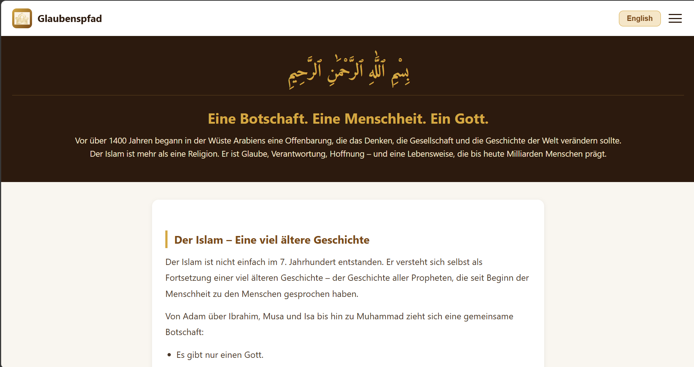

Glaubenspfad
Im Rahmen eines Projekts im Basislehrjahr habe ich eine Informationswebseite über den Islam entwickelt. Ziel war es, grundlegende Inhalte verständlich darzustellen und zur Aufklärung beizutragen. Die Webseite enthält Informationen zur Entstehung sowie zu wichtigen Aspekten des Islams. Zusätzlich habe ich eine Sprachumschaltung (DE/EN) und ein interaktives Quiz integriert.
Webseite ansehen